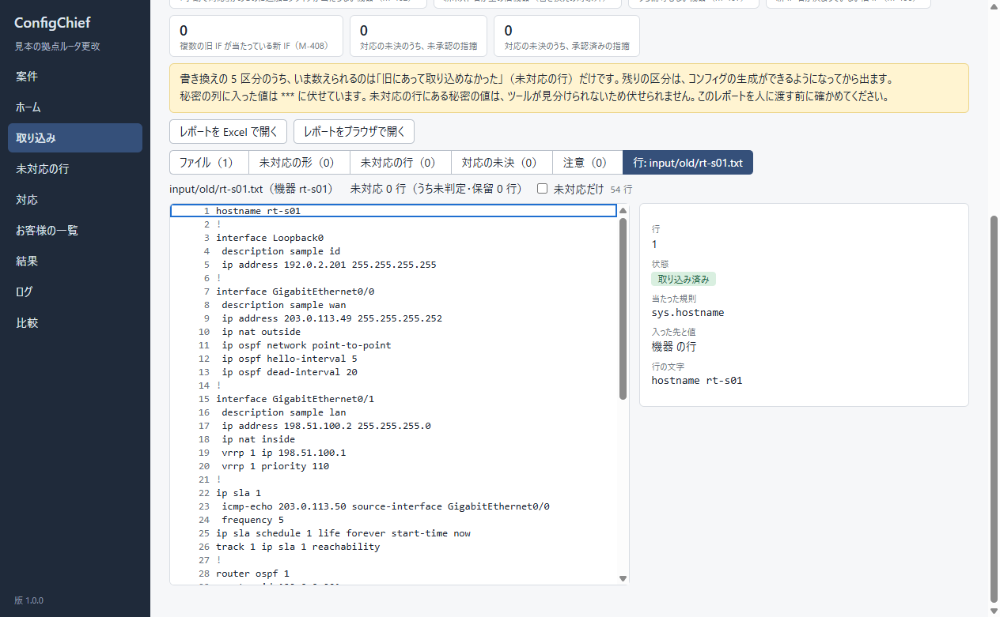
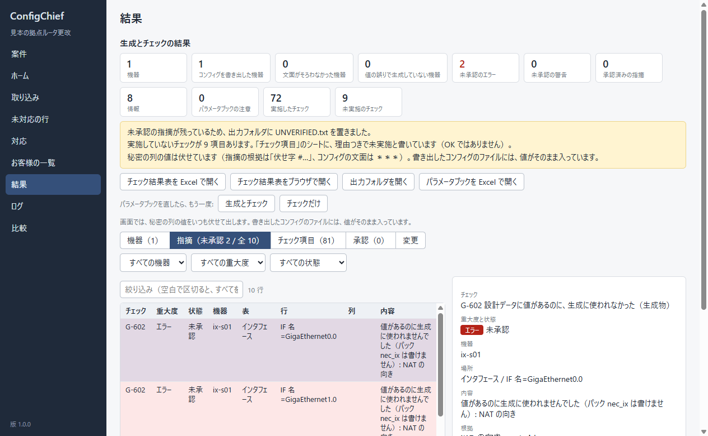

ConfigChief の使い方
ConfigChief は、ネットワーク機器のコンフィグを読んでメーカーによらない表（Excel のパラメータブック）にし、その表からコンフィグ・チェック結果表・納品用のシートを出すツールです。
- exe 1 つで動きます。インストールは要りません。外部と通信しません
- 同じ入力からは、いつも同じ出力になります
- 読めなかった行は「未対応」として必ず一覧に出します（黙って落としません）
- 対応しているメーカーは Cisco IOS / IOS-XE と NEC UNIVERGE IX です。メーカーごとの読み方・書き方は「メーカーパック」というテキストのファイルにあり、足すことができます（パックの書き方）
大事な注意: 同梱のパックは、メーカーが公開しているコマンドリファレンスを読んで作りました。実機の出力では確かめていません。 生成したコンフィグは、必ず検証機に流して確かめてから使ってください。何を確かめていないかは、各パックの README（
internal/packs/<パック>/README.md）の「確かめていないこと」にあります。
ほかのページ: シートと列の一覧 ・ チェックの一覧 ・ パックの書き方
1. 起動する
ConfigChief.exe を置いて、ダブルクリックします。画面の表示には WebView2 ランタイム（Windows 11 には初めから入っています）が要ります。
- 署名の無い exe なので、初めて起動するときに Microsoft Defender SmartScreen の警告が出ることがあります。「詳細情報」→「実行」で起動できます。取った exe は、リリースのページの SHA-256 と比べて確かめられます（PowerShell:
Get-FileHash ConfigChief.exe） - 何も付けずに起動すると、画面が開きます。案件フォルダを付けて起動すると、その案件を開きます
- コマンドを付けて起動すると、窓を開かずにそのコマンドを行って終わります（8 章）
- 書き込むのは、案件フォルダの中と、
%APPDATA%\ConfigChief（最近使った案件の一覧と、画面の作業フォルダ）だけです。レジストリは書きません

2. 案件フォルダ
1 つの案件が 1 つのフォルダです。中身はテキストと Excel だけなので、共有フォルダや git にそのまま置けます。
案件フォルダ/
project.yaml 案件の設定
parameters.xlsx パラメータブック（値の正本）
input/old/ 旧機器のコンフィグ（1 台 1 ファイル。端末ログのままでも読めます）
input/new/ 手で書いた新コンフィグ（使うときだけ）
input/customer/ お客様からもらった一覧（xlsx・xls・csv）
input/logs/ 検証機・本番の投入ログ、投入後の設定ログ
extra/ 追加コンフィグ（パックが書けない設定を、人が書いて差し込む）
mappings/ お客様の一覧の、列の対応
rules/ 案件ごとのチェックのルール
templates/ 納品用パラメータシートのひな形
packs/ 案件専用のメーカーパック（同じ ID の同梱パックより優先）
state/ 判定・承認・控え・操作の記録
out/<日時>/ 実行 1 回ごとの出力（コンフィグ、レポート）- ツールが書き換えるのは、パラメータブック（はっきり操作したときだけ。書く前に
state/backup/へ控えを取ります）と、state/・out/だけです。input/とextra/は読むだけです - パラメータブックを Excel で開いたままだと書けません。「Excel を閉じてください」と出たら、閉じてからやり直します
- 文字コードは UTF-8 と Shift_JIS を自動で見分けます
3. 更改の流れ（機器の入れ替え。同じメーカーでも別メーカーでも同じ）
- 案件を作り、旧コンフィグを置く: 画面の「案件」で作るか、
init。旧機器のコンフィグをinput/old/に入れます。端末ソフトのログ（show running-configを打った画面の保存）もそのまま置けます - 取り込む: 画面の「取り込み」か
import。行ごとに、取り込み済み・無視・未対応が色で分かります。パラメータブックができ、「機器対応」「IF 対応」のシートに案が入ります
- 対応を決める: Excel で「機器対応」（旧ホスト名 → 新ホスト名・新メーカー）と「IF 対応」（旧 IF 名 → 新 IF 名）を埋めます
- パラメータブックにする: 「対応」の画面か
book。対応を当てた設計データが、表ごとのシートに入ります。これ以降は、この Excel が値の正本です
- 未対応の行を片付ける: 画面の「未対応の行」か
judge。同じ形の行をまとめて、「手動で対応」（追加コンフィグに書く）・「対応不要」・「保留」を付けます - 生成とチェック: ホームの「生成とチェック」か
generate。全台のコンフィグ（out/<日時>/configs/）と、チェック結果表（reports/check_results.xlsx・.html）が出ます。値の誤りがある機器のコンフィグは書きません
- 指摘を直すか、承認する: エラーと警告は、Excel の値を直すか、理由を付けて承認します。未承認の指摘が残っている間は、出力フォルダに
UNVERIFIED.txtが置かれます - 検証機で確かめる: 1 台分を検証機に流し、その端末ログを
input/logs/に置いて、画面の「ログ」かlogs。機器に弾かれた行が一覧に出ます - 変更が来たら: Excel を直して 6 をやり直します。2 回目からは、前回から変わった機器と行の一覧（
reports/changes.xlsx）が出ます - 納品物を出す: ホームの「納品物」か
export。納品用パラメータシートと、相手に渡すパラメータ表が出ます - 投入の後: 投入後の設定のログを
input/logs/に置いて、verify。パラメータブックから作ったコンフィグとの違いが出ます
別メーカーへ書き換えるとき
「機器対応」の新メーカーを変えると、同じパラメータブックから別メーカーのコンフィグが出ます。新しいメーカーで書けないものは、3 通りで知らせます。どれも黙って落としません。
| 出方 | 意味 | すること |
|---|---|---|
| G-602（エラー） | その列を、新しいメーカーのパックが書けない | 持っていかないならセルを空にする。別の書き方で持っていくなら、追加コンフィグに書いてセルを空にする |
| G-601・G-603・G-606（エラー） | 列は書けるが、その値の書き方が新しいメーカーに無い・足りない値がある | 指摘の文にある直し方のとおり、値を書き直す |
| G-614（警告） | パックが、新しいメーカーの書き方に置き換えて書いた（例: QoS の「残りの帯域の %」を「帯域の %」に） | 指摘の文を読み、置き換えでよければ承認する。よくなければ値を書き直す |
4. 新規構築の流れ
- 案件を作り、ホームの「空のブックを作る（新規構築）」か
book --new。見出しだけのパラメータブックができます。見出しのセルのコメントに、列の説明と記入例があります - 1 台目を、シート「機器」から書きます（ホスト名とメーカーは必須です）
- 似た機器は、ホームの「機器の複製」か
clone --from <元> --to <新しいホスト名,…>で増やします。値は元のままなので、アドレスなど機器ごとに違う値を直します（重なりはチェックが指摘します） - 全台に共通の値は、「機器」の列に
*（全機器）か@グループ名を書いた 1 行で書けます。空の列をまとめて埋めたいときは、シート「共通値」を使います - あとは更改の 6 以降と同じです
コンフィグを先に手で書く進め方
手で書いたコンフィグを input/new/ に置いて取り込み、book --from new でパラメータブックにできます。旧コンフィグがあれば、「比較」で旧と新を比べて、入れ忘れと値の違いを確かめられます。
5. パラメータブック
- 1 つのシートが 1 種類の設定、1 行が設定 1 件です。シートと列の一覧は tables.md
- 1 行目が見出しです。列の順番は自由で、定義に無い見出しの列を足してもかまいません（自由列。追加コンフィグと納品用シートから使えます）
- 有効・無効は
有効無効、○×、yesno、truefalseのどれでも読みます - 複数の値を持つ列は、カンマか改行で区切ります
- 秘密の値（パスワード・鍵）は平文で書きます。画面・チェック結果表・変更一覧では伏せ、生成するコンフィグには書きます
- 同じキーの行が「ホスト名」「
@グループ名」「*」の複数にあるときは、ホスト名 ＞ グループ ＞*の順で 1 行を取ります
6. チェックと承認
チェックの一覧は checks.md です。
| 頭の字 | 種類 | 例 |
|---|---|---|
| V | 値 | 必須の値が空、アドレスの重なり、使われていない ACL |
| X | 対向（2 台の間） | IPsec の暗号が両端で違う、OSPF のエリアが違う |
| G | 生成 | 書けない値、生成した文面を読み直した結果が表と違う |
| M | 移行 | 旧との違い、対応が決まっていない IF |
| S | お客様の一覧 | 一覧とパラメータブックの値が違う |
| L | ログ | 機器に弾かれた行、投入後の設定との違い |
- 承認: 指摘をそのまま受け入れるときは、理由と名前を付けて承認します（結果の画面で指摘を選ぶか、
approve）。警告は「この機器の同じチェック」「全機器の同じチェック」とまとめて承認できます。エラーは 1 件ずつです - 承認できない指摘もあります（必須の値が空、文面が作れない、など）。値を直します
- 承認は
state/approvals.yamlに残り、チェック結果表の「承認」のシートに出ます - 重大度の変更・チェックの停止は、
project.yamlのchecks.severity・checks.disableに書きます
案件ごとのルール
rules/*.yaml に、その案件だけの決まりを書けます。生成とチェックのたびに全台に当てます。
rules:
- id: P-001
title: 全台に NTP サーバがある
severity: error
require_line: '^ntp server '
- id: P-002
title: telnet を使わない
severity: warning
under: '^line vty'
forbid_line: '^transport input .*telnet'
- id: P-003
title: インタフェースの説明は空にしない
severity: warning
table: interfaces
where: 'row.enabled'
expr: 'row.description != ""'
- id: P-004
title: NTP サーバは全台で同じ
severity: warning
equal_across: {table: ntp_servers, column: server}種類は 5 つです: require_line（含むべき行）、forbid_line（含んではいけない行）、expr（行ごとの式）、unique（値の重複）、equal_across（全台で値がそろっているか）。devices で機器を絞れます（ホスト名・@グループ・vendor:パックの ID）。
7. パックが書けない設定（追加コンフィグ）
パックが対応していない設定は、extra/ に書いて差し込みます。
| ファイル | 当たる機器 |
|---|---|
extra/_all.j2 | 全機器 |
extra/@グループ名.j2 | そのグループの機器 |
extra/ホスト名.j2 | その機器 |
- 書いた文面がそのまま出ます。Jinja2 の書き方で、パラメータブックの値を使えます（例:
{{ device.hostname }}） - 差し込む位置は、先頭の行で指定できます（例:
{# position: after interfaces #}）。指定が無ければ、末尾の手前です
8. コマンドライン
画面と同じ処理を、窓を開かずに行えます。バッチファイルから呼ぶと、終わるまで待ち、%ERRORLEVEL% で終了コードを見られます（0 = 見るものなし、1 = 未承認の指摘などが残っている、2 = 実行できなかった）。
ConfigChief.exe init <dir> [--name <案件名>] [--kind migration|new]
ConfigChief.exe import --project <dir> [--source old|new] [--pack <ID>]
ConfigChief.exe book --project <dir> [--from old|new] [--replace]
ConfigChief.exe book --project <dir> --new
ConfigChief.exe clone --project <dir> --from <ホスト名> --to <ホスト名>[,<ホスト名>…]
ConfigChief.exe compare --project <dir> --a <old|new|book> --b <old|new|book>
ConfigChief.exe generate --project <dir> [--device <ホスト名>]
ConfigChief.exe check --project <dir>
ConfigChief.exe approve --project <dir> --finding <指紋> --reason <理由> --by <名前>
ConfigChief.exe approve --project <dir> --rule <ID> --devices <範囲> [--table <表>] [--column <列>] --reason <理由> --by <名前>
ConfigChief.exe approve --project <dir> --remove <承認の ID>
ConfigChief.exe judge --project <dir> [--source old|new] [--all]
ConfigChief.exe judge --project <dir> --group <ID> --verdict manual|not_needed|hold|none [--devices <範囲>] [--reason <理由>] --by <名前>
ConfigChief.exe customer --project <dir> [--draft <ファイル> [--sheet <シート>]] [--apply <指紋>,… | --apply-rule S-501|S-503 [--devices <範囲>]]
ConfigChief.exe export --project <dir> --what sheet|peer|unhandled [--secrets show|mask] [--source old|new]
ConfigChief.exe logs --project <dir>
ConfigChief.exe verify --project <dir>
ConfigChief.exe sites --project <dir> [--source book|old|new|logs]
ConfigChief.exe diff <fileA> <fileB>
ConfigChief.exe diff --tree <fileA> <fileB> [--keep-stamps] [--keep-secrets]
ConfigChief.exe diff --tree --project <dir> --a <側> --b <側>
ConfigChief.exe pack test <パックのフォルダ> [--lines] [--dump]
ConfigChief.exe pack columns <パックのフォルダ>
ConfigChief.exe version端末に直接打ったときは、Windows の決まりで、端末は終わりを待たずに次の入力を受け付けます（結果の文字は出ます）。待たせたいときは start /wait ConfigChief.exe … と打ちます。
9. そのほかの機能
- 比較: 旧コンフィグ・新コンフィグ・パラメータブックのうち 2 つを、設計データとして比べます。文面どうしの比較（
diff）と、階層を見た比較（diff --tree。親の行の下に違いを出します）もあります - お客様の一覧: お客様からもらった Excel・CSV の列を、
mappings/の列対応でパラメータブックの列に結び付け、値の違いを出します。選んだ値をパラメータブックに反映できます - 多拠点の一覧（
sites）: 多くの拠点の同じ設定を、横に並べて見ます - 納品用パラメータシート:
templates/に置いた Excel のひな形に、値を流し込みます。ひな形が無ければ標準の形で出します - 未対応の行の持ち出し用レポート（
export --what unhandled）: 未対応の行を、値と名前を伏せた「形」にして出します。現場の外へ持ち出して、パックを直す材料にするためのものです。渡す前に、必ず中身を見てください
10. 困ったとき
| 起きたこと | 見るところ |
|---|---|
| メーカーを判定できない | 取り込みの画面で、候補からパックを選びます（import --pack <ID>） |
| 行が「未対応」になる | その行の理由が画面に出ます。パックの README の「読まない行」も見ます。設定として要るなら、追加コンフィグに書きます |
| 生成が止まる（コンフィグが出ない） | チェック結果表のエラーを見ます。値の誤り（V-101〜V-107・V-109）がある機器は書きません |
| G-604（往復の不一致）が出る | 生成した文面を読み直した結果が、表と違います。パックの不具合か、パックが書けない値です。指摘の場所の値を見ます |
| 機器に弾かれた | logs の一覧に、弾かれた行と機器の返事が出ます。実機の書き方がパックと違うときは、追加コンフィグで補うか、パックを直します |
11. 制限
- 実機の出力では確かめていません（冒頭の注意）
- 表示は日本語だけです
- 対応していない設定の例: ルートマップ、IKEv2、L2TP、VLAN・スイッチポート・LAG、IPv6 の経路制御。取り込みでは「未対応」になり、書き換えでは追加コンフィグで運びます
- 機種ごとのポート名の定義（新 IF 名の案を機種から作る機能）は、まだありません